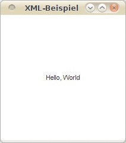

43.2 Verarbeiten von XML-Dokumenten mit Java
Für die Verarbeitung von XML-Dokumenten mit Java gibt es diverse
Standards, von denen JAXP (Java API for XML
Processing) sicherlich eine zentrale Rolle spielt. JAXP definiert
drei verschiedene Programmierschnittstellen, um XML-Dokumente mit
Java zu interpretieren:
- Mittels DOM (Document Object Model) durch
Überführung des Dokuments in eine baumartige Objektstruktur
- Ereignisorientiert mittels SAX (Simple
API for XML)
- Ereignisorientiert mittels StAX (Streaming
API for XML)
Alle drei Standards werden wir im Folgenden kennenlernen. Des Weiteren
werden wir einen Blick auf JAXB (Java Architecture
for XML Binding) werfen, einen weiteren Standard für die Verarbeitung
von XML-Dokumenten in Java.
Xerces von Apache ist eine bekannte Implementation
aller drei JAXP-APIs und fester Bestandteil des Standard-JDK; eine
Implementation von JAXB liegt dem JDK seit Version 6 bei. Für
die Beispiele in diesem Kapitel benötigen wir also keine Fremdbibliotheken,
sondern wir stützen uns auf Features des aktuellen Standard-JDK.
In den folgenden Abschnitten werden die verschiedenen APIs an Hand
eines einheitlichen Beispiels näher vorgestellt. Dazu soll mit
Hilfe eines XML-Dokuments das Aussehen eines Swing-Fensters konfiguriert
werden, in dem Titel, Schriftart, Hintergrund- und Vordergrundfarbe
des Fensters mit XML-Mitteln eingestellt werden. Beim Öffnen
des Fensters soll die XML-Datei gelesen und die darin enthaltenen
Einstellungen auf das Fenster angewendet werden. Diese XML-Datei sieht
wie folgt aus:
001 <?xml version="1.0" encoding="iso-8859-15"?>
002 <!DOCTYPE frame SYSTEM "config_jaxp.dtd">
003 <frame>
004 <title>XML-Beispiel</title>
005 <font size="11">Arial</font>
006 <fgcolor>0</fgcolor>
007 <bgcolor>16777215</bgcolor>
008 </frame>
|
config_jaxp.xml |
Listing 43.17: XML-Dokument zur Konfiguration eines Swing-Fensters
(config_jaxp.xml)
Als Schriftart soll Arial 11 Punkt verwendet werden, die Vordergrundfarbe
ist Schwarz, die Hintergrundfarbe Weiß und der Fenstertitel
lautet "XML-Beispiel". Der Farbwert 16777215 steht für 224-1,
repräsentiert also den hexadezimalen Wert FFFFFF, der - als drei
Bytes gelesen - die Farbkanäle Rot, Grün und Blau auf ihre
jeweils maximale Helligkeit einstellt. Natürlich können
Sie die Werte beliebig ändern und sich (bei jedem erneuten Start
des Fensters) ansehen, wie die Anpassungen sich auf das Aussehen des
Fensters auswirken.
Den Font werden wir mit der Methode getFont
aus dem Schriftarten-String innerhalb des XML-Dokuments generieren,
die Color-Objekte mit der Methode
decode:
Die passende DTD sieht so aus:
001 <?xml version="1.0" encoding="iso-8859-15"?>
002 <!ELEMENT frame (title, font, fgcolor, bgcolor)>
003
004 <!-- Fenstertitel -->
005 <!ELEMENT title (#PCDATA)>
006
007 <!-- Schriftart -->
008 <!ELEMENT font (#PCDATA) >
009 <!ATTLIST font size CDATA "12">
010
011 <!-- Vordergrundfarbe -->
012 <!ELEMENT fgcolor (#PCDATA)>
013
014 <!-- Hintergrundfarbe -->
015 <!ELEMENT bgcolor (#PCDATA)>
|
config_jaxp.dtd |
Listing 43.18: DTD zur Konfiguration eines Fensters (config_jaxp.dtd)
Wir werden sie für alle drei JAXP-APIs anwenden. Für die
Implementation nach dem JAXB-Standard werden wir später eine
eigene XSD entwickeln.
Das folgende Listing zeigt den Rumpf unseres Fensterprogramms. Die
zunächst leere Methode readConfig
werden wir in den folgenden Abschnitten ausprogrammieren, indem wir
den jeweils passenden Code aus den verschiedenen XML-APIs einfügen.
001 /* Listing4319.java */
002
003 import java.awt.*;
004 import javax.swing.*;
005
006 public class Listing4319 extends JFrame
007 {
008 private String title;
009 private Color fgcolor;
010 private Color bgcolor;
011 private Font font;
012
013 public Listing4319()
014 {
015 readConfig();
016
017 setTitle(title);
018
019 addWindowListener(new WindowClosingAdapter());
020 JLabel label = new JLabel("Hello, World", JLabel.CENTER);
021 label.setPreferredSize(new Dimension(200, 200));
022
023 Container pane = getContentPane();
024 pane.setLayout(new FlowLayout());
025 pane.add(label);
026
027 pane.setBackground(bgcolor);
028 pane.setForeground(fgcolor);
029 label.setFont(font);
030
031 pack();
032 }
033
034 private void readConfig()
035 {
036 // ... zunächst leer
037 }
038
039 public static void main(String[] args)
040 {
041 Listing4319 window = new Listing4319();
042 window.setVisible(true);
043 }
044 }
|
Listing4319.java |
Listing 43.19: Rumpf-Anwendung
Das Beispielprogramm erzeugt ein Fenster mit dem gewünschten
Titel, der definierten Hinter- und Vordergrundfarbe und dem angegebenen
Font. Das folgende Bild zeigt das Fenster, wenn es mit dem Original-XML-Dokument
konfiguriert wurde: weißer Hintergrund, schwarze Vordergrundfarbe,
Schriftart Arial 11 Punkt und die entsprechende Titelzeile.

Abbildung 43.1: Mittels XML konfiguriertes Fenster
43.2.1 Document Object Model - DOM
Als Erstes wollen wir die XML-Konfigurationsdatei mit der DOM-Schnittstelle
verarbeiten. DOM ist ein programmiersprachenunabhängiger Standard,
dessen zentraler Gedanke es ist, das XML-Dokument in den Hauptspeicher
zu laden und dort in Form eines Objektbaums zur Verfügung zu
stellen. Ein solcher DOM-Baum lässt sich mit wenigen Zeilen Java-Code
aus der XML-Datei erstellen und kann mit Hilfe geeigneter Java-Methoden
weiter verarbeitet werden. Da das komplette Dokument im Hauptspeicher
liegt, ist DOM für größere XML-Dateien eher weniger
gut geeignet.
Die Ursprünge von DOM reichen bis zu den ersten Gehversuchen
des dynamischen Webs zurück. Mit Hilfe von JavaScript kann man
nämlich schon seit vielen Jahren Webseiten verändern, indem
man auf den DOM-Baum des HTML-Dokuments zugreift und diesen zur Laufzeit
verändert. DOM ist mittlerweile ein W3C-Standard
und eine Java-Implementation des Standards ist seit der Version 1.4
fester Bestandteil des JDK.
Basis aller XML-APIs ist der XML-Parser, der
den Eingabestrom in seine grammatikalischen Bestandteile zerlegt.
Er liegt im Package javax.xml.parsers.
Uns interessieren darin die Klassen DocumentBuilder
zum Erzeugen des DOM-Baums und DocumentBuilderFactory,
um den DocumentBuilder
zu erzeugen (vgl. das Factory-Design-Pattern, Abschnitt 11.4.4).
Eine DocumentBuilderFactory
erzeut man mit Hilfe ihrer statischen Methode newInstance:
public static DocumentBuilderFactory newInstance()
public DocumentBuilder newDocumentBuilder()
throws ParserConfigurationException
public void setValidating(boolean validating)
|
javax.xml.parsers.DocumentBuilderFactory |
Der DOM-XML-Parser stellt verschiedene Methoden zur Verfügung,
um das XML-Dokument einzulesen und in einen DOM-Baum zu verwandeln:
public Document parse(File f)
throws SAXException, IOException
public Document parse(InputSource is)
throws SAXException, IOException
public Document parse(InputStream is)
throws SAXException, IOException
public Document parse(String uri)
throws SAXException, IOException
public void setEntityResolver(EntityResolver e)
|
javax.xml.parsers.DocumentBuilder |
Die Interfaces des Objektbaums liegen im Package org.w3c.dom,
unter anderem liegt dort das Interface Document,
das den eingelesenen Baum repräsentiert. Es folgt die erste Version
unserer readConfig-Methode zur
Vervollständigung von Listing 43.19
nach DOM-Standard:
001 private void readConfig()
002 {
003 try {
004 DocumentBuilderFactory factory = DocumentBuilderFactory.newInstance();
005 factory.setValidating(true);
006 DocumentBuilder builder = factory.newDocumentBuilder();
007 builder.setEntityResolver(new EntityResolver() {
008 public InputSource resolveEntity(String publicId, String systemId)
009 throws SAXException, IOException {
010 if (systemId.endsWith("config_jaxp.dtd"))
011 return new InputSource(
012 getClass().getResourceAsStream("config_jaxp.dtd"));
013 return null;
014 }
015 });
016 Document document = builder.parse(getClass().getResourceAsStream(
017 "config_jaxp.xml"));
018
019 // fortsetzen: Document verarbeiten
020 }
021 catch (ParserConfigurationException x) {
022 x.printStackTrace();
023 }
024 catch (SAXException x) {
025 x.printStackTrace();
026 }
027 catch (IOException x) {
028 x.printStackTrace();
029 }
030 }
|
Listing 43.20: Erster Entwurf der readConfig-Methode
Zunächst erzeugen wir eine neue DocumentBuilderFactory
und konfigurieren diese so, dass der entstehende DocumentBuilder
validierend ist, dass er also beim Einlesen der XML-Datei prüft,
ob diese den Vorgaben ihrer DTD entspricht. Es genügt dabei nicht,
setValidating(true) aufzurufen,
sondern zusätzlich muss ein ErrorHandler
gesetzt werden, der entscheidet, was mit auftretenden Exceptions passieren
soll. Andernfalls würde man auf der Konsole folgende Meldung
erhalten (und die Fehler selbst würden stillschweigend ignoriert):
Warning: validation was turned on but an org.xml.sax.ErrorHandler was not
set, which is probably not what is desired. [...]
Das Interface besitzt drei Methoden:
public void warning(SAXParseException exception)
throws SAXException
public void error(SAXParseException exception)
throws SAXException
public void fatalError(SAXParseException exception)
throws SAXException
|
org.xml.sax.ErrorHandler |
Im einfachsten Fall implementiert man den ErrorHandler
so, dass man die Parameter-Exception wirft. In Listing 43.21
werden wir diesen Weg wählen.
Vor dem Aufruf der parse-Methode,
mit der wir die XML-Datei einlesen, setzen wir noch einen EntityResolver.
Er hat die Aufgabe, die DTD von der richtigen Stelle im Dateisystem
zu lesen. Der Verweis auf die DTD in unserer XML-Datei ist relativ,
sie wird also in dem Verzeichnis gesucht, aus dem das Java-Programm
gestartet wird.
Am DocumentBuilder
rufen wir anschließend die parse-Methode
auf, um die Datei config_jaxp.xml einzulesen.
Das Ergebnis des Aufrufs ist ein Objekt vom Typ Document,
das den DOM-Baum für das eingelesene XML-Dokument repräsentiert.
Das Document-Interface
ist vom Interface org.w3c.dom.Node
abgeleitet, das auch alle anderen Knoten des DOM-Baums implementieren.
Am Document-Interface
interessiert uns zunächst nur die Methode, mit der wir Zugriff
auf das Wurzelelement haben:
Wenn wir uns das XML-Dokument aus Listing 43.17
als Baum vorstellen, enthält das frame-Element
(also die Wurzel) selbst keine verwertbaren Informationen. Wichtiger
sind für uns die Kindknoten title,
font, fgcolor
und bgcolor. Der Zugriff darauf
erfolgt mit Hilfe der Interfaces Node
und Element.
public String getAttribute(String name)
public NodeList getElementsByTagName(String name)
|
org.w3c.dom.Element |
Mit getTextContent
beschaffen wir uns den Textinhalt der Elemente. Für die Fontgröße
benötigen wir Zugriff auf den Wert des Attributs size,
den wir mit der Methode getAttribute
erhalten. Außerdem verwenden wir die Methode getElementsByTagName
zum Zugriff auf die Kindknoten.
Nun haben wir alles zusammen, was wir benötigen, um die readConfig-Methode
in der DOM-Variante auszuprogrammieren:
001 /* Listing4321.java */
002
003 import java.awt.*;
004 import java.io.IOException;
005
006 import javax.swing.*;
007 import javax.xml.parsers.*;
008
009 import org.w3c.dom.*;
010 import org.xml.sax.*;
011
012 public class Listing4321 extends JFrame
013 {
014 private String title;
015 private Color fgcolor;
016 private Color bgcolor;
017 private Font font;
018
019 public Listing4321()
020 {
021 readConfig();
022
023 setTitle(title);
024
025 addWindowListener(new WindowClosingAdapter());
026 JLabel label = new JLabel("Hello, World", JLabel.CENTER);
027 label.setPreferredSize(new Dimension(200, 200));
028
029 Container pane = getContentPane();
030 pane.setLayout(new FlowLayout());
031 pane.add(label);
032
033 pane.setBackground(bgcolor);
034 pane.setForeground(fgcolor);
035 label.setFont(font);
036
037 pack();
038 }
039
040 private void readConfig()
041 {
042 try {
043 DocumentBuilderFactory factory = DocumentBuilderFactory.newInstance();
044 factory.setValidating(true);
045 DocumentBuilder builder = factory.newDocumentBuilder();
046 builder.setEntityResolver(new EntityResolver()
047 {
048 public InputSource resolveEntity(String publicId, String systemId)
049 throws SAXException, IOException
050 {
051 if (systemId.endsWith("config_jaxp.dtd"))
052 return new InputSource(
053 getClass().getResourceAsStream("config_jaxp.dtd"));
054 return null;
055 }
056 });
057 builder.setErrorHandler(new ErrorHandler()
058 {
059 public void warning(SAXParseException exception) throws SAXException
060 {
061 }
062 public void fatalError(SAXParseException exception) throws SAXException
063 {
064 throw exception;
065 }
066 public void error(SAXParseException exception) throws SAXException
067 {
068 throw exception;
069 }
070 });
071 Document document = builder.parse(getClass().getResourceAsStream(
072 "config_jaxp.xml"));
073
074 Element frameElement = document.getDocumentElement();
075 Element titleElement = (Element) frameElement.getElementsByTagName(
076 "title").item(0);
077 title = titleElement.getTextContent().trim();
078
079 Element fontElement = (Element) frameElement.getElementsByTagName("font")
080 .item(0);
081 font = new Font(fontElement.getTextContent().trim(), Font.PLAIN,
082 Integer.parseInt(fontElement.getAttribute("size").trim()));
083
084 Element fgcolorElement = (Element) frameElement.getElementsByTagName(
085 "fgcolor").item(0);
086 fgcolor = Color.decode(fgcolorElement.getTextContent().trim());
087
088 Element bgcolorElement = (Element) frameElement.getElementsByTagName(
089 "bgcolor").item(0);
090 bgcolor = Color.decode(bgcolorElement.getTextContent().trim());
091 }
092 catch (ParserConfigurationException x) {
093 x.printStackTrace();
094 }
095 catch (SAXException x) {
096 x.printStackTrace();
097 }
098 catch (IOException x) {
099 x.printStackTrace();
100 }
101 }
102
103 public static void main(String[] args)
104 {
105 Listing4321 window = new Listing4321();
106 window.setVisible(true);
107 }
108 }
|
Listing4321.java |
Listing 43.21: Umsetzung nach DOM
Um das Programm auszuführen, legen wir die config_jaxp.xml
und die config_jaxp.dtd (Listing 43.18)
im gleichen Verzeichnis ab wie das Java-Programm. Wenn wir nun das
Programm ausführen, erscheint ein Swing-Fenster mit dem Titel,
der Hintergrund- und Vordergrundfarbe sowie dem Font aus der config_jaxp.xml,
genau wie in Abbildung 43.1
zu sehen.
43.2.2 Simple API for XML - SAX
SAX steht für Simple API for XML
und stellt wie DOM eine Programmierschnittstelle zum Einlesen von
XML-Dokumenten dar. SAX ist zwar kein offizieller Standard einer unabhängigen
Organisation, dafür ist es programmiersprachenunabhängig
und besitzt Implementationen für diverse Programmiersprachen.
Seit der Version 1.4 ist es fester Bestandteil des JDK. Im Gegensatz
zu DOM und JDOM erstellt der Parser hier keinen Objektbaum, sondern
die Verarbeitung der XML-Datei erfolgt synchron mit ihrem Einlesen.
Dazu registriert sich das verarbeitende Programm direkt am Parser
und empfängt während des Einlesens der Elemente, Attribute
usw. fortwährend Ereignisse, die es dann nach Bedarf verarbeitet.
Abgesehen vom Parser und seiner Factory liegen die Klassen und Interfaces
dieses API im Package org.xml.sax.
Wie bei DOM lässt sich der SAXParser
nicht per Konstruktor erzeugen, sondern man benötigt dazu die
SAXParserFactory.
Auch die Fabrik erzeugt man nicht über einen Konstruktor, sondern
mit Hilfe einer statischen Methode:
public static SAXParserFactory newInstance()
public SAXParser newSAXParser()
throws ParserConfigurationException, SAXException
public void setValidating(boolean validating)
|
javax.xml.parsers.SAXParserFactory |
Der Parser besitzt eine Reihe von Methoden, um ein XML-Dokument einzulesen:
public void parse(File f, DefaultHandler dh)
throws SAXException, IOException
public void parse(InputSource is, DefaultHandler dh)
throws SAXException, IOException
public void parse(InputStream is, DefaultHandler dh)
throws SAXException, IOException
public void parse(String uri, DefaultHandler dh)
throws SAXException, IOException
|
javax.xml.parsers.SAXParser |
Auffälligster Unterschied zum DOM-API ist, dass die parse-Methoden
des SAX-Parser einen DefaultHandler
benötigen, der eine Reihe von Callback-Methoden besitzt, die
vom SAX-Parser aufgerufen werden. Der DefaultHandler
ist eine Klasse mit einer Reihe von leeren Methoden, die einige Interfaces
implementieren.
public void startDocument() throws SAXException
public void endDocument() throws SAXException
public void startElement(String uri, String localName,
String qName, Attributes attributes)
throws SAXException
public void endElement(String uri, String localName, String qName)
throws SAXException
public void characters(char ch[], int start, int length)
throws SAXException
public InputSource resolveEntity(String publicId, String systemId)
throws IOException, SAXException
|
org.xml.sax.helpers.DefaultHandler |
Um mit der SAX-API ein XML-Dokument zu verarbeiten, müssen wir
eine eigene Klasse aus DefaultHandler
ableiten und die nötigen Methoden nach unseren Bedürfnissen
überschreiben. Wie die Namen der Methoden vermuten lassen, wird
startElement
bei jedem öffnenden, endElement
bei jedem schließenden Tag gerufen usw. Die folgende Skizze
zeigt exemplarisch, in welcher Reihenfolge die Callback-Methoden aufgerufen
werden:
startDocument
startElement <frame>
startElement <title>
characters XML-Beispiel
endElement </title>
...
endElement </frame>
endDocument
|
Da immer nur ein kleiner Ausschnitt der einzulesenden Teile im Hauptspeicher
gehalten wird, verbraucht der SAX-Parser weniger Ressourcen als sein
DOM-Pendant und kann daher auch für sehr große XML-Dokumente
verwendet werden. Nachteilig ist dabei, dass die SAX-Implementation
tendenziell umso schwieriger wird, je mehr Informationen über
das Umfeld eines Elements benötigt werden. Denn mit dem SAX-Parser
gibt es keine Möglichkeit, wahlfrei im XML-Dokument (oder -Baum)
zu navigieren: Das Dokument wird ein einziges Mal von vorne bis hinten
durchgelesen! Je größer der benötigte Kontext ist,
desto eher sollte man daher erwägen, das XML-Dokument mit einer
der APIs zu verarbeiten, die eine freie Navigation ermöglichen,
also zum Beispiel mit DOM oder JAXB.
Für unsere Beispielanwendung sind die Methoden startElement
und characters
zu überschreiben. Damit wir den Text des Elements, den wir in
der Methode characters
empfangen, sinnvoll interpretieren können, müssen wir uns
in startElement
den Namen des aktuellen Elements merken. Außerdem benötigen
wir eine weitere Instanzvariable für den Zusammenbau des Font-Objekts.
Die Fontsize erhalten wir nämlich über die Attributliste
in startElement,
den Fontnamen dagegen erst in der etwas später aufgerufenen characters-Methode;
und erst dann können wir das Fontobjekt zusammenbauen.
Die Fontsize erhalten wir aus dem Attributwert, der in SAX durch das
Interface Attributes
repräsentiert wird. Wir erhalten in der startElement-Methode
der Klasse DefaultHandler
Zugriff auf Attributes-Objekte:
Analog zur DOM-Implementation müssen wir die Methode resolveEntity
überschreiben, um die DTD zum XML-Dokument von der passenden
Stelle im Dateisystem einzulesen. Damit haben wir fast alles zusammen,
um die readConfig-Methode (Listing 43.19)
mit Hilfe der SAX-API zu implementieren. Um das Beispiel übersichtlich
zu halten, werden wir eine anonyme Klasse erzeugen, die sich vom DefaultHandler
ableitet.
001 /* Listing4322.java */
002
003 import java.awt.*;
004 import java.io.IOException;
005
006 import javax.swing.*;
007 import javax.xml.parsers.*;
008
009 import org.xml.sax.*;
010 import org.xml.sax.helpers.DefaultHandler;
011
012 public class Listing4322 extends JFrame
013 {
014 private String title;
015 private Color fgcolor;
016 private Color bgcolor;
017 private Font font;
018
019 public Listing4322()
020 {
021 readConfig();
022
023 setTitle(title);
024
025 addWindowListener(new WindowClosingAdapter());
026 JLabel label = new JLabel("Hello, World", JLabel.CENTER);
027 label.setPreferredSize(new Dimension(200, 200));
028
029 Container pane = getContentPane();
030 pane.setLayout(new FlowLayout());
031 pane.add(label);
032
033 pane.setBackground(bgcolor);
034 pane.setForeground(fgcolor);
035 label.setFont(font);
036
037 pack();
038 }
039
040 private void readConfig()
041 {
042 try {
043 SAXParserFactory factory = SAXParserFactory.newInstance();
044 factory.setValidating(true);
045 SAXParser parser = factory.newSAXParser();
046
047 parser.parse(getClass().getResourceAsStream("config_jaxp.xml"),
048 new DefaultHandler()
049 {
050 private String element;
051
052 private int fontsize;
053
054 public void startElement(String uri, String localName,
055 String qName, Attributes attributes) throws SAXException
056 {
057 element = qName;
058 if (element.equals("font")) {
059 fontsize = Integer.parseInt(attributes.getValue("size").trim());
060 }
061 }
062
063 public void characters(char[] ch, int start, int length)
064 throws SAXException
065 {
066 String text = String.valueOf(ch, start, length).trim();
067 if (element.equals("title")) {
068 title = text;
069 }
070 else if (element.equals("font")) {
071 font = new Font(text, Font.PLAIN, fontsize);
072 }
073 else if (element.equals("fgcolor")) {
074 fgcolor = Color.decode(text);
075 }
076 else if (element.equals("bgcolor")) {
077 bgcolor = Color.decode(text);
078 }
079 }
080
081 public InputSource resolveEntity(String publicId, String systemId)
082 throws IOException, SAXException
083 {
084 if (systemId.endsWith("config_jaxp.dtd"))
085 return new InputSource(getClass().getResourceAsStream(
086 "config_jaxp.dtd"));
087 return null;
088 }
089
090 public void error(SAXParseException e) throws SAXException
091 {
092 throw e;
093 }
094 });
095 }
096 catch (ParserConfigurationException x) {
097 x.printStackTrace();
098 }
099 catch (SAXException x) {
100 x.printStackTrace();
101 }
102 catch (IOException x) {
103 x.printStackTrace();
104 }
105 }
106
107 public static void main(String[] args)
108 {
109 Listing4322 window = new Listing4322();
110 window.setVisible(true);
111 }
112 }
|
Listing4322.java |
Listing 43.22: Umsetzung nach SAX
Wenn Sie die config_jaxp.xml (Listing 43.17)
und die config_jaxp.dtd (Listing 43.18)
im gleichen Verzeichnis ablegen wie das Programm selbst, sehen Sie
nun auch bei der SAX-Implementierung das oben beschriebene und per
XML-Datei konfigurierte Fenster, nachdem Sie das Programm starten.
43.2.3 Streaming API for XML - StAX
StAX basiert wie SAX auf dem Konzept des ereignisorientierten
XML-Parsens. SAX wird als Push-Parsing
bezeichnet, weil der Parser die führende Rolle übernimmt
und den passiven DefaultHandler
mit Ereignissen versorgt. StAX dagegen wird als Pull-Parsing
bezeichnet, denn das verarbeitende Programm hat die führende
Rolle und ruft wie bei einem Iterator nach und nach die Elemente aus
dem an sich passiven Parser ab.
StAX ist aus dem XMLPULL-Projekt von BEA und Sun hervorgegangen.
Seine Implementierung wurde im JSR 173 spezifiziert und ist seit Version
1.6 fester Bestandteil des JDK. Der StAX-Parser ist im Package javax.xml.stream
und seinen Unterpackages zu finden. Genau genommen stellt StAX sogar
zwei APIs zur Verfügung: die Cursor API und die Iterator API.
Wir wollen uns im Folgenden die Cursor API ansehen.
Ausgangspunkt der Cursor API ist wie bei DOM eine Fabrik, die XMLInputFactory,
die uns mit einen XMLStreamReader
einen XML-Parser zur Verfügung stellt:
public static XMLInputFactory newInstance()
throws FactoryConfigurationError
public XMLStreamReader createXMLStreamReader(Reader reader)
throws XMLStreamException
public XMLStreamReader createXMLStreamReader(Source source)
throws XMLStreamException
public XMLStreamReader createXMLStreamReader(InputStream stream)
throws XMLStreamException
public void setProperty(String name, Object value)
throws java.lang.IllegalArgumentException
|
javax.xml.stream.XMLInputFactory |
Es gibt eine Reihe weiterer createXMLStreamReader-Methoden,
die hier nicht weiter erläutert werden sollen. Die Factory besitzt
keine setValidating-Methode
wie ihr SAX- oder DOM-Pendant, sondern die Validierung schaltet man
mit Hilfe der allgemeinen setProperty-Methode
ein.
Der über die Factory erzeugte XMLStreamReader
besitzt neben anderen eine hasNext-
und next-Methoden
und wird wie ein Iterator
verwendet:
public int next()
throws XMLStreamException
public boolean hasNext()
throws XMLStreamException
public void close()
throws XMLStreamException
public String getElementText()
throws XMLStreamException
public String getAttributeValue(int idx)
public String getLocalName()
|
javax.xml.stream.XMLStreamReader |
hasNext
liefert erwartungsgemäß true
zurück, solange weitere Tokens im Eingabestrom zur Verabeitung
anstehen. Die next-Methode
liefert das nächste Eingabesymbol in Form einer Konstante aus
dem Interface XMLStreamConstants
zurück:
public static final int START_DOCUMENT
public static final int END_DOCUMENT
public static final int START_ELEMENT
public static final int END_ELEMENT
public static final int CHARACTERS
public static final int COMMENT
public static final int ATTRIBUTE
|
javax.xml.stream.XMLStreamConstants |
Das folgende Schema zeigt die unterschiedlichen Zustände des
Parsers während des Einlesens unserer config_jaxp.xml-Datei:
START_DOCUMENT
START_ELEMENT <frame>
CHARACTERS
START_ELEMENT <title>
CHARACTERS XML-Beispiel
END_ELEMENT </title>
...
END_ELEMENT </frame>
END_DOCUMENT
|
Der Parser beginnt immer mit dem Symbol START_DOCUMENT
und liefert bei jedem öffnenden Tag ein START_ELEMENT.
Zwischen dem öffnenden frame
und dem öffnenden title-Tag
liegen Leerzeichen und ein Zeilenumbruch. Daher liefert der Parser
anschließend ein CHARACTERS
(und nicht START_ELEMENT,
wie man analog zu SAX vermuten könnte). Dies geht so weiter,
bis das komplette Dokument verarbeitet ist und als letztes Symbol
ein END_DOCUMENT
geliefert wird.
Mit Hilfe der get-Methoden lassen
sich nähere Informationen beschaffen, z.B. mit getLocalName
der Name des aktuellen Elements. Die get-Methoden
des XMLStreamReader-Interface
lassen sich jedoch nur passend zum aktuellen Eingabesymbol aufrufen,
andernfalls wird der Aufruf mit einer IllegalStateException
quittiert. Man kann also beispielsweise die Methode getAttributeValue
nicht im Status END_ELEMENT
aufrufen.
Nach diesen Erläuterungen können wir nun die readConfig-Methode
in der StAX-Variante implementieren:
001 /* Listing4323.java */
002
003 import java.awt.*;
004
005 import javax.swing.*;
006 import javax.xml.stream.*;
007
008 public class Listing4323 extends JFrame
009 {
010 private String title;
011 private Color fgcolor;
012 private Color bgcolor;
013 private Font font;
014
015 public Listing4323()
016 {
017 readConfig();
018
019 setTitle(title);
020
021 addWindowListener(new WindowClosingAdapter());
022 JLabel label = new JLabel("Hello, World", JLabel.CENTER);
023 label.setPreferredSize(new Dimension(200, 200));
024
025 Container pane = getContentPane();
026 pane.setLayout(new FlowLayout());
027 pane.add(label);
028
029 pane.setBackground(bgcolor);
030 pane.setForeground(fgcolor);
031 label.setFont(font);
032
033 pack();
034 }
035
036 private void readConfig()
037 {
038 try {
039 XMLInputFactory factory = XMLInputFactory.newInstance();
040 XMLStreamReader parser = factory.createXMLStreamReader(getClass()
041 .getResourceAsStream("config_jaxp.xml"));
042
043 while (parser.hasNext()) {
044 if (parser.next() == XMLStreamConstants.START_ELEMENT) {
045 if (parser.getLocalName().equals("titelzeile")) {
046 this.title = parser.getElementText().trim();
047 }
048 if (parser.getLocalName().equals("font")) {
049 int size = Integer.parseInt(parser.getAttributeValue(0).trim());
050 font = new Font(parser.getElementText().trim(), Font.PLAIN, size);
051 }
052 if (parser.getLocalName().equals("fgcolor")) {
053 fgcolor = Color.decode(parser.getElementText().trim());
054 }
055 if (parser.getLocalName().equals("bgcolor")) {
056 bgcolor = Color.decode(parser.getElementText().trim());
057 }
058 }
059 }
060 parser.close();
061 }
062 catch (XMLStreamException x) {
063 x.printStackTrace();
064 }
065 }
066
067 public static void main(String[] args)
068 {
069 Listing4323 window = new Listing4323();
070 window.setVisible(true);
071 }
072 }
|
Listing4323.java |
Listing 43.23: Umsetzung nach StAX
Unter der Voraussetzung, dass Programm und XML-Dateien im selben Verzeichnis
liegen, ergibt sich auch hier das gleiche Bild wie in den vorigen
beiden Implementierungen: Es erscheint ein Swing-Fenster mit den konfigurierten
Eigenschaften, so wie in Abbildung 43.1
zu sehen.
43.2.4 Java Architecture for XML Binding - JAXB
Die Java Architecture for XML-Binding, kurz JAXB (http://jaxb.java.net),
ist eine XML-Programmierschnittstelle, die aus den JSRs 31 und 222
hervorgegangen ist. JAXB ist also ein Java-Standard und eine Implementierung
ist seit Version 6 fester Bestandteil des J2SE.
Um JAXB verwenden zu können, benötigen wir eine XML-Grammatik.
DTDs sind nämlich nicht offizieller Bestandteil der Spezifikation,
ihre Unterstützung ist laut Dokumentation nur experimenteller
Natur. Für unsere Beispielanwendung werden wir daher eine XML
Schema Definition erstellen (vgl. Abschnitt 43.1.3),
die unserer DTD semantisch gleicht. Um Namenskonflikte mit den Klassen
java.awt.Frame und java.awt.Font
zu vermeiden, stellen wir darin den Elementnamen den Präfix »c«
vor.
001 <?xml version="1.0" encoding="iso-8859-15"?>
002 <xs:schema xmlns:xs="http://www.w3.org/2001/XMLSchema">
003
004 <xs:element name="cframe">
005 <xs:complexType>
006 <xs:sequence>
007 <xs:element ref="ctitle"/>
008 <xs:element ref="cfont"/>
009 <xs:element ref="cfgcolor"/>
010 <xs:element ref="cbgcolor"/>
011 </xs:sequence>
012 </xs:complexType>
013 </xs:element>
014
015 <!-- Fenstertitel -->
016 <xs:element name="ctitle" type="xs:string"/>
017
018 <!-- Schriftart -->
019 <xs:element name="cfont">
020 <xs:complexType>
021 <xs:simpleContent>
022 <xs:extension base="xs:string">
023 <xs:attribute name="size" type="xs:int" default="12"/>
024 </xs:extension>
025 </xs:simpleContent>
026 </xs:complexType>
027 </xs:element>
028
029 <!-- Vordergrundfarbe -->
030 <xs:element name="cfgcolor" type="xs:int"/>
031
032 <!-- Hintergrundfarbe -->
033 <xs:element name="cbgcolor" type="xs:int"/>
034
035 </xs:schema>
|
config_jaxb.xsd |
Listing 43.24: XSD-Grammatik (config_jaxb.xsd)
Auch das XML-Dokument zur Konfiguration unseres Fensterprogramms müssen
wir nun leicht anpassen. Zum einen müssen wir die Referenz auf
die DTD durch eine Referenz auf die XSD ersetzen (Zeile 2 und 3).
Zum anderen haben sich die Elementnamen geändert, denn sie fangen
ja nun mit »c« an.
001 <?xml version="1.0" encoding="iso-8859-15"?>
002 <cframe xmlns:xsi="http://www.w3.org/2001/XMLSchema-instance"
003 xsi:noNamespaceSchemaLocation='config_jaxb.xsd'>
004 <ctitle>XML-Beispiel</ctitle>
005 <cfont size="11">Arial</cfont>
006 <cfgcolor>0</cfgcolor>
007 <cbgcolor>16777215</cbgcolor>
008 </cframe>
|
config_jaxb.xml |
Listing 43.25: XML-Dokument zur Konfiguration eines Swing-Fensters
(config_jaxb.xml)
JAXB funktioniert nach dem sogenannten »Data Binding«-Prinzip,
das Java-Objekte in XML-Dokumente übersetzt und umgekehrt:
- Durch den Prozess des Marshalling
werden aus Java-Objekten XML-Dokumente erzeugt.
- Durch den Prozess des Unmarshalling
werden aus XML-Dokumenten Java-Objekte erzeugt.
Zentraler Bestandteil von JAXB sind die Klassen und Interfaces im
Package javax.xml.bind
und seinen Unterpackages sowie der Binding-Compiler
xjc,
der im gleichen Verzeichnis wie der Javacompiler javac
und die Virtual Maschine java
liegt. Aufgabe des Binding-Compiler ist es, aus einer XML-Grammatik
Java-Klassen zu erzeugen, mit deren Hilfe sich das Marshalling und
Unmarshalling einfach realisieren lässt.
Um den Binding-Compiler zu testen, rufen wir ihn einfach per Kommandozeile
auf:
xjc
Das Ergebnis dieses unparametrisierten Aufrufs ist eine Auflistung
aller Aufrufparameter samt zugehöriger Erklärungen. Falls
der Binding-Compiler vom System nicht gefunden wird, haben Sie vielleicht
eine ältere Java-Version installiert oder das bin-Verzeichnis
des JDK liegt nicht in der PATH-Umgebungsvariablen
Ihres Betriebssystems. Ziehen Sie in diesem Fall bitte Abschnitt 2.1
zu Rate.
Um unser Beispiel auszuprobieren, wechseln wir das Verzeichnis, in
dem die XSD-Datei liegt (Listing 43.24).
Nun rufen wir den Binding-Compiler auf, um aus der Datei config_jaxb.xsd
die für das Marshalling und Unmarshalling nötigen Java-Klassen
zu erzeugen:
xjc config_jaxb.xsd
Der Binding-Compiler generiert aus dem Wurzelelement und den komplexen
Subelementen die Java-Klassen Cfont.java,
Cframe.java und ObjectFactory.java
und legt sie in einem Paket (und gleichnamigen Unterverzeichnis) generated
an:
parsing a schema...
compiling a schema...
generated/Cfont.java
generated/Cframe.java
generated/ObjectFactory.java
Außerdem generiert er eine ObjectFactory,
um entsprechende Objekte zu erzeugen. Für uns ist diese Klasse
jedoch zunächst ohne Bedeutung, weil wir manuell keinen Objektbaum
erzeugen wollen. Interesanter sind die Schnittstellen der anderen
generierten Klassen, beispielsweise die von Cframe:
public String getCtitle()
public void setCtitle(String value)
public Cfont getCfont()
public void setCfont(Cfont value)
public int getCfgcolor()
public void setCfgcolor(int value)
public int getCbgcolor()
public void setCbgcolor(int value)
|
Für alle Subelemente des Cframe-Elements
wurden get- und set-Methoden
generiert, mit denen die Eigenschaften des Frames gesetzt, verändert
und abgefragt werden können. Die Schnittstelle der generierten
Klasse Cfont sieht ähnlich
aus:
public int getSize()
public void setSize(Integer value)
public String getValue()
public void setValue(String value)
|
Anders als in Cframe wurden
hier zusätzlich die Methoden getValue
und setValue zum Abholen und
Setzen des Elementinhalts generiert. Da das cframe-Element
per Definition keinen Elementinhalt besitzt, generiert der Binding-Compiler
auch keine entsprechenden Getter und Setter.
Zudem fällt auf, dass das size-Attribut
vom Typ Integer
ist, weil das korrespondierende Attribut in der XSD vom Datentyp int
ist. Die generierten Klassen bilden also nicht nur die Struktur der
Grammatik ab, sondern berücksichtigen auch den Datentyp der Attribute
und Elemente. Mit einer DTD als Grundlage wäre das nicht möglich
gewesen, denn DTDs kennen solche elementaren Datentypen nicht.
Für das Unmarshalling mit JAXB benötigen wir noch einige
Klassen aus der JAXB-API. Die Klasse JAXBContext
stellt den Einstiegspunkt in die API dar und bietet Schnittstellen
zum Erzeugen von Marshaller-
und Unmarshaller-Objekten
an:
public static JAXBContext newInstance(String packages)
throws JAXBException
public Unmarshaller createUnmarshaller()
throws JAXBException
public Marshaller createMarshaller()
throws JAXBException
|
javax.xml.bind.JAXBContext |
Ein Objekt vom Typ JAXBContext
erzeugt man mit Hilfe der Methode newInstance.
Deren Parameter packages enthält
eine durch Doppelpunkte getrennte Liste von Package-Namen, die Klassen
enthalten, die mittels xjc-Compiler
erzeugt wurden. In unserem Fall ist das nur das Package generated.
Über den JAXBKontext
können wir uns einen Unmarshaller
beschaffen, der eine Reihe von unmarshall-Methoden
zur Verfügung stellt. Außerdem kann am Unmarshaller
ein Schema gesetzt werden, um die Validierung einzuschalten. Möchte
man den Abbruch bei Fehlern erzwingen, so ist im Gegensatz zu den
früheren APIs kein expliziter ValidationEventHandler
zu setzen, denn bei Fehlern bricht das Unmarshalling per Default ab.
public Object unmarshal(Reader reader)
throws JAXBException
public Object unmarshal(Source source)
throws JAXBException
public Object unmarshal(InputStream is)
throws JAXBException
public void setSchema(Schema schema)
|
javax.xml.bind.Unmarshaller |
Ein Schema-Objekt
lässt sich mit Hilfe einer SchemaFactory
erzeugen:
public static SchemaFactory newInstance(String schemaLanguage)
public Schema newSchema(URL schema)
throws SAXException
public Schema newSchema(File schema)
throws SAXException
|
javax.xml.validation.SchemaFactory |
Mögliche Werte für den schemaLanguage-Parameter,
der den Typ der Grammatik definiert, sind in der Klasse javax.xml.XMLConstants
als Konstante definiert. Wir verwenden eine XML Schema Definition,
also verwenden wir die Konstante W3C_XML_SCHEMA_NS_URI.
001 /* Listing4326.java */
002
003 import generated.Cframe;
004
005 import java.awt.*;
006
007 import javax.swing.*;
008 import javax.xml.bind.*;
009 import javax.xml.validation.*;
010
011 import org.xml.sax.SAXException;
012
013 public class Listing4326 extends JFrame
014 {
015 private String title;
016 private Color fgcolor;
017 private Color bgcolor;
018 private Font font;
019
020 public Listing4326()
021 {
022 readConfig();
023
024 setTitle(title);
025
026 addWindowListener(new WindowClosingAdapter());
027 JLabel label = new JLabel("Hello, World", JLabel.CENTER);
028 label.setPreferredSize(new Dimension(200, 200));
029
030 Container pane = getContentPane();
031 pane.setLayout(new FlowLayout());
032 pane.add(label);
033
034 pane.setBackground(bgcolor);
035 pane.setForeground(fgcolor);
036 label.setFont(font);
037
038 pack();
039 }
040
041 private void readConfig()
042 {
043 try {
044 JAXBContext context = JAXBContext.newInstance("generated");
045 Unmarshaller unmarshaller = context.createUnmarshaller();
046
047 SchemaFactory sf = SchemaFactory.newInstance(
048 javax.xml.XMLConstants.W3C_XML_SCHEMA_NS_URI);
049
050 Schema schema = sf.newSchema(getClass().getResource("config_jaxb.xsd"));
051 unmarshaller.setSchema(schema);
052
053 Cframe frame = (Cframe) unmarshaller.unmarshal(
054 getClass().getResource("config_jaxb.xml"));
055 this.title = frame.getCtitle();
056 this.bgcolor = new Color(frame.getCbgcolor());
057 this.fgcolor = new Color(frame.getCfgcolor());
058 this.font = new Font(frame.getCfont().getValue(), Font.PLAIN,
059 frame.getCfont().getSize());
060 }
061 catch (JAXBException x) {
062 x.printStackTrace();
063 }
064 catch (SAXException x) {
065 x.printStackTrace();
066 }
067 }
068
069 public static void main(String[] args)
070 {
071 Listing4326 window = new Listing4326();
072 window.setVisible(true);
073 }
074 }
|
Listing4326.java |
Listing 43.26: Umsetzung nach JAXB
Das Beispiel kann auf die gleiche Weise ausprobiert werden wie alle
vorigen. Wir legen einfach config_jaxb.xml
im gleichen Verzeichnis ab wie das Listing und die XSD und starten
dann das Fensterprogramm. Wie in allen anderen Fällen erscheint
nun ein Swing-Fenster entsprechend den Konfigurationsangaben in der
XML-Datei.